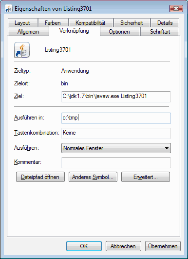

2.3 Tipps für eigene Experimente
Eine neue Programmiersprache lernt man nur, wenn man selbst Programme
in dieser Sprache schreibt. Je mehr, desto besser. Bei der Lektüre
des Buchs ist es daher sinnvoll, von Anfang an eigene Experimente
durchzuführen und so viele Beispielprogramme wie möglich
auszuprobieren, abzuändern, zu übersetzen und auszuführen.
In diesem Abschnitt wollen wir ein paar informelle Tipps geben, die
das erleichtern sollen.
Hier noch einmal in Kurzform die Schritte vom Quellcode bis zum lauffähigen
Programm:
- Erstellen Sie die Quelldatei mit einem ASCII-Editor. Verwenden
Sie keine Textverarbeitung, denn die würde dem Code unverständliche
Steuerzeichen hinzufügen.
- Achten Sie darauf, dass die Datei die Erweiterung .java
trägt, und geben Sie ihr exakt denselben Namen wie der Hauptklasse.
- Übersetzen Sie das Programm mit dem Compiler javac
und geben Sie dabei den Dateinamen als Argument an. Um alle Java-Dateien
in einem Verzeichnis zu übersetzen, können Sie auch *.java
als Argument verwenden.
- Falls im Quelltext syntaktische Fehler enthalten sind, meldet
der Compiler sie zusammen mit der Zeilennummer und der Quelldatei,
in der sie aufgetreten sind. Am Anfang passieren leicht Fehler wie
vergessene oder überflüssige Klammern oder Semikolons. Bedenken
Sie auch, dass alle Schlüsselwörter kleingeschrieben werden
und bei Bezeichnern streng zwischen Groß- und Kleinschreibung
unterschieden wird.
- Mitunter gibt es Fehlermeldungen, weil Code nicht erreicht werden
kann oder Variablen nicht initialisiert werden. Das ist in Java nicht
erlaubt und wird vom Compiler mittels Datenflussanalyse überprüft.
Stellen Sie den Code in einem solchen Fall geeignet um.
- Ignorieren Sie zunächst Warnungen, bei denen der Compiler
die Verwendung von Klassen oder Methoden, die als deprecated
markiert wurden, kritisiert. Derartige Programmteile funktionieren
zwar meist noch, sind aber veraltet und sollten eigentlich nicht mehr
verwendet werden.
- Gibt der Compiler gar keine Meldung aus, wurde das Programm erfolgreich
übersetzt.
- Sie können das Programm nun mit dem Java-Interpreter java
starten. Geben Sie als Argument nur den Klassennamen ohne die Erweiterung
.java oder .class
an.
- Wenn es beim Aufruf des Interpreters eine Fehlermeldung der Art
NoClassDefFoundError
gibt, liegt das fast immer daran, dass der Name der Klasse falsch
geschrieben wurde oder dass keine oder eine falsch benannte main-Methode
vorhanden ist. Beachten Sie, dass main
genauso deklariert wird wie beispielsweise in Listing 2.1.
2.3.2 Einfache Ausgaben
Für die ersten Schritte in einer neuen Sprache benötigt
man immer auch I/O-Routinen, um einfache Ein- und Ausgaben vornehmen
zu können. Glücklicherweise kann man in Java nicht nur grafikorientierte
Programme schreiben, sondern auch auf die Standardein- und -ausgabe
zugreifen. Damit stehen für kleine Programme einfache I/O-Routinen
zur Verfügung, die wie in den meisten konventionellen Programmiersprachen
verwendet werden können.
Mit Hilfe des Kommandos System.out.println
können einfache Ausgaben auf den Bildschirm geschrieben werden.
Nach jedem Aufruf wird ein Zeilenumbruch ausgegeben. Mit System.out.print
kann diese auch unterdrückt werden. Beide Methoden erwarten ein
einziges Argument, das von beliebigem Typ sein kann. Dieses kann jedoch
auch zur Laufzeit mit Hilfe des Plus-Operators aus verschiedenen Bestandteilen
zusammengefügt werden:
001 /* Listing0202.java */
002
003 public class Listing0202
004 {
005 public static void main(String[] args)
006 {
007 System.out.println("1+2=" + (1+2));
008 }
009 }
|
Listing0202.java |
Listing 2.2: Einfache Ausgaben
Die Ausgabe des Programms ist:
1+2=3
Seit Java 6 gibt es ein printf-Pendant,
das in Abschnitt 12.6.2 beschrieben
wird. Es bietet ähnliche Funktionen wie die entsprechenden C-Routinen
und stellt eine flexible und einfach zu bedienende Ausgabeschnittstelle
zur Verfügung.
2.3.3 Einfache Eingaben
Seit der Version Java 5 ist auch das Einlesen von Daten über
die Kommandozeile ein Kinderspiel. Hierzu verwenden man statt des
Ausgabe-Streams System.out
den Eingabe-Stream System.in
in Verbindung mit einer Instanz der Hilfsklasse Scanner.
Das folgende Listing zeigt ein Programm, das zwei Ganzzahlen einliest,
sie zusammenzählt und das Ergebnis auf dem Bildschirm ausgibt:
001 /* Listing0203.java */
002
003 import java.util.Scanner;
004 import java.io.IOException;
005
006 public class Listing0203
007 {
008 public static void main(String[] args)
009 {
010 int a, b, c;
011
012 Scanner scanner = new Scanner(System.in);
013
014 System.out.println("Bitte a eingeben: ");
015 a = scanner.nextInt();
016 System.out.println("Bitte b eingeben: ");
017 b = scanner.nextInt();
018 c = a + b;
019 System.out.println("a+b="+c);
020 }
021 }
|
Listing0203.java |
Listing 2.3: Einfache Eingaben
Werden die Zahlen 10 und 20 eingegeben, so lautet die Ausgabe des
Programms:
Bitte a eingeben:
10
Bitte b eingeben:
20
a+b=30
Weitere Informationen zur streambasierten Ein-/Ausgabe sind in Kapitel 19
und Kapitel 20 zu finden.
2.3.4 Formatierung der Quelltexte
Es ist bekannt, dass man sich über die Formatierung von Quelltexten
und die Einrückung von Deklarationen und Anweisungen streiten
kann. Jeder Entwickler hat seinen eigenen Stil und kennt gute Argumente,
genau diesen zu verwenden. Bei Java-Programmen gibt es einige große
Lager, denen man sich anschließen kann. Im professionellen Umfeld
ist man sogar meist gezwungen, sich einem vorgegebenen Stil anzupassen.
Wir wollen uns diesen fruchtlosen Diskussionen nicht anschließen
und keinesfalls behaupten, die in diesem Buch verwendete Art der Quelltextformatierung
wäre die einzig richtige. Wir haben jedoch versucht, die Beispielprogramme
konsistent zu formatieren und dabei einige wenige, leicht verständliche
Regeln einzuhalten.
Bei Klassen- und Methodendefinitionen stehen die geschweiften Klammern
unterhalb der Deklarationsanweisung und die eigentliche Deklaration
ist eingerückt:
001 import java.util.Scanner;
002
003 public class Listing0204
004 {
005 public static void main(String[] args)
006 {
007 //Hier steht der Methodenrumpf
008 }
009 }
|
Listing 2.4: Einrücken von Klassen und Methoden
Bei Kontrollanweisungen innerhalb einer Methode schreiben wir die
öffnende Klammer dagegen in dieselbe Zeile wie die einleitende
Anweisung:
001 for (int i = 0; i < aNeighbours.length; ++i) {
002 if (p1.x + aNeighbours[i][0] == p2.x) {
003 if (p1.y + aNeighbours[i][1] == p2.y) {
004 return true;
005 }
006 }
007 }
|
Listing 2.5: Einrücken von Kontrollanweisungen
Dies gilt auch für fortgesetzte Anweisungen wie beispielsweise
else
oder else if:
001 if (cmd.equals("Größer")) {
002 d.height *= 1.05;
003 d.width *= 1.05;
004 } else if (cmd.equals("Kleiner")) {
005 d.height *= 0.95;
006 d.width *= 0.95;
007 } else {
008 x = 10;
009 }
|
Listing 2.6: Einrücken fortgesetzter Anweisungen
Diese Technik verwenden wir meist auch, wenn bei einem Methodenaufruf
nicht alle Argumente in eine Zeile passen:
001 System.out.println(
002 "Grüße aus Hamburg".regionMatches(
003 8,
004 "Greetings from Australia",
005 8,
006 2
007 )
008 );
|
Listing 2.7: Einrücken langer Methodenaufrufe
Diese einfachen Regeln lassen sich in den meisten Fällen anwenden,
es gibt aber auch Fälle, in denen sie versagen. So zum Beispiel,
wenn der Testausdruck einer if-Anweisung
über mehrere Zeilen geht, wenn die Parameterdeklaration einer
Methode nicht in eine Zeile passt oder schlicht, wenn die Verschachtelung
bereits sehr tief ist und keine weitere Einrückung zulässt.
In diesem Fall sei der Leser um Nachsicht gebeten und aufgefordert,
den ästhetischen Anspruch an das Programm den jeweiligen pragmatischen
Erwägungen unterzuordnen.
Wie in allen Programmiersprachen, gibt es auch in Java Konventionen
für die Vergabe von Namen. Sie sind zwar nicht zwingend erforderlich,
erleichtern aber das Verständnis der Quelltexte ungemein und
sollten daher unbedingt eingehalten werden. Die wichtigsten sind:
- Klassennamen beginnen stets mit einem Großbuchstaben. Beispiele
sind String, Vector
oder Hello. Besteht ein Klassenname
aus mehreren Silben, können zur Steigerung der Übersichtlichkeit
auch die Folgesilben mit einem Großbuchstaben beginnen. Beispiele
dafür wären HelloWorld,
KeyAdapter oder NoSuchMethodException.
Klassennamen, die nur aus Großbuchstaben bestehen, sind unüblich.
- Methodennamen beginnen mit einem Kleinbuchstaben. Haben sie mehrere
Silben, ist die erste oft ein Verb. Weitere beginnen mit einem Großbuchstaben.
Beispiele sind println, hasMoreElements
oder isEnabled.
- Paketnamen bestehen ausschließlich aus Kleinbuchstaben.
Beispiele sind java.lang, javax.swing.event
oder com.solution42.util (mehrteilige
Paketnamen werden durch Punkte separiert).
- Für Variablennamen gelten dieselben Konventionen wie für
Methoden. Es ist unüblich, Membervariablen mit einem Präfix
wie z.B. »m_« zu versehen. Auch die Verwendung der ungarischen
Notation, bei der Variablen datentypbezogene
Namenspräfixe erhalten, ist in Java nicht üblich.
Weitere Konventionen werden, wenn erforderlich, im Buch beschrieben.
2.3.6 Aufruf von Java-Programmen unter Windows
Immer wieder wird gefragt, wie man Java-Programme möglichst einfach
unter Windows aufrufen kann. Das Starten aus der DOS-Box erscheint
vielen Lesern zu umständlich und bei einem Java-Programm mit
grafischer Oberfläche stört das überflüssige Konsolenfenster.
Im Gegensatz zu com- oder exe-Dateien
ist ein kompiliertes Java-Programm zwar nicht direkt ausführbar,
aber es gibt doch einige Möglichkeiten, das Starten unter Windows
zu vereinfachen.
Erstellen einer Batch-Datei
Eine erste Vereinfachung besteht darin, eine Batch-Datei zu erstellen,
aus der der java-Interpreter mit dem Java-Programm als Argument aufgerufen
wird. Soll beispielsweise das Java-Programm Listing3701,
dessen Bytecode Listing3701.class im
Verzeichnis c:\tmp liegt, mit dem java-Interpreter,
der in das Verzeichnis c:\jdk1.7 installiert
wurde, gestartet werden, kann dazu folgende Batch-Datei verwendet
werden:
@echo off
c:
cd \tmp
c:\jdk1.7\bin\java Listing3701
Wird diese beispielsweise go3701.bat
genannt und in ein Verzeichnis gelegt, das über die PATH-Angabe
zu erreichen ist, kann unser Java-Programm durch einfache Eingabe
des Kommandos go3701 aus jedem
Verzeichnis heraus oder aus dem »Ausführen«-Dialog
des Startmenüs gestartet werden.
Erstellen einer Verknüpfung auf dem Desktop
Ebenso leicht ist es möglich, ein Java-Programm durch einen Doppelklick
auf ein Desktop-Symbol zu starten. Dazu wird eine Verknüpfung
angelegt, die den java-Interpreter mit dem
Programmnamen als Argument aufruft. Nach einem rechten Mausklick auf
den Windows-Desktop ist dazu zunächst der Menüpunkt »Neu.Verknüpfung«
aufzurufen. Anschließend sind die Angaben für Programm,
Arbeitsverzeichnis und Icon so zu machen, dass der spätere Eigenschaften-Dialog
des neu angelegten Symbols wie folgt aussieht (beispielhaft für
Windows Vista und die Version 1.7 des JDK):

Abbildung 2.5: Eine Verknüpfung auf dem Windows-Desktop
Das Java-Programm kann nun wie jedes andere Windows-Programm per Doppelklick
vom Desktop aus gestartet werden.
Verwenden von javaw anstelle von java
Soll ein java-Programm, das eine grafische Oberfläche hat, ohne
Konsolenfenster gestartet werden, kann anstelle des Standard-Interpreters
java
der alternative Interpreter javaw
verwendet werden. Er arbeitet genauso wie java
und akzeptiert dieselben Optionen (siehe Abschnitt 53.2),
stellt der Anwendung aber kein Konsolenfenster zur Verfügung.
Zu beachten ist allerdings, dass alle Ausgaben auf System.out
und System.err ins Leere gehen.
2.3.7 Troubleshooting
Nachfolgend noch einmal eine kurze Zusammenfassung der häufigsten
Probleme beim Erstellen, Übersetzen und Starten eines Java-Programms,
inklusive Beschreibung, wie man sie behebt oder umgeht.
Was ist eine DOS-Box und wie startet man sie?
Alle Werkzeuge des JDK arbeiten kommandozeilenorientiert. Anders als
typische GUI-Programme wie Adobe Photoshop, Microsoft Excel oder Firefox
besitzen sie also keine grafische Oberfläche, sondern werden
aus einer »DOS-Box« (bzw. einer UNIX-Shell) heraus aufgerufen.
Diese wird unter neueren Windows-Betriebssystemen als »Eingabeaufforderung«
bezeichnet und ist meist im Startmenü (unter »Programme«)
zu finden. In der DOS-Box werden Befehle und ihre Parameter über
die Tastatur eingegeben und starten so die zugehörigen Programme.
Um in einer DOS-Box zurechtzukommen, sollte man deren Kommandosyntax
und die wichtigsten Befehle zum Starten von Programmen und für
Datei- und Verzeichnisoperationen kennen. Beides wird in unzähligen
Büchern und (zum Teil) in den Hilfedateien des Betriebssystems
beschrieben.
java läuft, javac aber nicht
Wenn unter Windows der Java-Interpreter java
gestartet werden kann, beim Aufruf des Compilers javac
aber eine Fehlermeldung kommt, liegt das meist daran, dass der PATH
nicht korrekt gesetzt wurde. Während die JDK-Installation den
Interpreter unter anderem auch in Verzeichnisse kopiert, auf die der
PATH bereits verweist (so dass dieser ohne weiteres Zutun aus jedem
Verzeichnis aufgerufen werden kann), ist das für den Compiler
und die übrigen JDK-Werkzeuge nicht der Fall. Diese können
nur dann ohne vorangestellten Pfad aufgerufen werden, wenn der PATH
auf das Unterverzeichnis bin des Installationsverzeichnisses
verweist. Bei der in diesem Buch angenommenen Standardinstallation
muss die PATH-Variable
also das Verzeichnis c:\jdk1.7\bin enthalten.
Was sind eigentlich Umgebungsvariablen?
Einer der Standardmechanismen zur Konfiguration von Programmen besteht
darin, Umgebungsvariablen zu setzen. Diese werden vom Anwender (meist
innerhalb einer DOS-Box bzw. Shell mit Hilfe des set-Kommandos)
gesetzt und vom Programm gelesen und zur Konfiguration verwendet.
Die beiden für das JDK wichtigsten Umgebungsvariablen sind PATH
und CLASSPATH.
Über Erstere wird dem Betriebssystem mitgeteilt, wo es nach ausführbaren
Programmen suchen soll, also etwa nach dem Compiler oder Interpreter
des JDK. Die Umgebungsvariable CLASSPATH
(umgangssprachlich »der CLASSPATH« genannt) ist JDK-spezifisch.
Sie zeigt dem Compiler und Interpreter an, in welchen Verzeichnissen
er nach Klassendateien suchen soll. Im Gegensatz zu PATH
kann der CLASSPATH
bei der Standardinstallation eines aktuellen JDK ungesetzt bleiben.
Compiler und Interpreter finden ihr eigenes Laufzeitsystem automatisch
und die selbst geschriebenen Klassen werden im aktuellen Verzeichnis
gesucht.
Da es zu umständlich ist, häufig benötigte Umgebungsvariablen
nach jedem Aufruf einer DOS-Box neu zu setzen, bieten alle Betriebssysteme
die Möglichkeit, sie permanent festzulegen. Abschnitt 2.1.2
erläutert dies am Beispiel der PATH-Variable.
Der Compiler javac arbeitet nicht
Wenn der Compiler javac
die .java-Datei nicht findet, liegt dies
in aller Regel daran, dass sie nicht existiert. Der Compiler unterscheidet
zwischen Groß- und Kleinschreibung; die Datei Test1.java
ist somit streng von test1.java oder
TEST1.JAVA zu unterscheiden. Zudem muss
die Dateierweiterung .java lauten, denn
andere Erweiterungen werden nicht akzeptiert. Hat der Editor fälschlicherweise
die Erweiterung .txt angehängt,
wird die Datei vom Compiler nicht gefunden.
Wichtig ist auch, dass der Compiler korrekt aufgerufen wird. Anders
als beim Interpreter wird die Dateierweiterung stets angegeben. Ein
Aufruf von javac Test1 wird
also nicht funktionieren, javac Test1.java
dagegen sehr wohl. Schließlich ist zu beachten, dass die zu
übersetzende Klasse denselben Basisnamen hat wie die Datei, in
der sie definiert wurde. In der Datei Test1.java
muss also eine öffentliche Klasse mit dem Namen Test1
definiert worden sein.
Der Interpreter java arbeitet nicht korrekt
Der häufigste Fehler beim Aufruf des Interpreters ist ein »NoClassDefFoundError«.
Ein trivialer Fehler besteht darin, dass der Interpreter falsch aufgerufen
wurde. Im Gegensatz zum Compiler möchte er keinen Dateinamen
als Argument übergeben bekommen, sondern einen Klassennamen.
Folglich darf die Erweiterung .java oder
.class nicht angegeben werden. Die in
die Datei Test1.class übersetzte
Klasse Test1 wird also durch
Aufruf von java Test1 gestartet,
und nicht durch java Test1.class.
Das funktioniert allerdings nur, und das ist auch schon die zweite
Fehlerquelle, wenn Test1 auch
tatsächlich eine Methode public static
void main enthält. Diese versucht nämlich der
Interpreter zu starten, und wenn sie nicht vorhanden ist, gibt es
obige Fehlermeldung.
Ist der Aufruf korrekt und die main-Methode
ebenso vorhanden wie die nötige Klassendatei, kann es trotzdem
vorkommen, dass der Interpreter die Klasse nicht starten kann. Das
liegt dann meist daran, dass etwas mit dem CLASSPATH
nicht stimmt. Der CLASSPATH
ist eine Umgebungsvariable, die eine Liste von Verzeichnissen und
Archivdateien enthält, die vom Interpreter der Reihe nach durchsucht
werden, um die auszuführenden Klassen zu finden. Die genaue Interpretation
des CLASSPATH
hat sich über die Jahre etwas geändert, aber bei aktuellen
JDK-Versionen kann sie wie folgt zusammengefasst werden:
Ist gar kein CLASSPATH
angegeben, sucht der Interpreter im aktuellen Verzeichnis (bzw.
bei Klassen in Unterpaketen in darin befindlichen Unterverzeichnissen)
nach der Klassendatei. Ist dagegen eine Umgebungsvariable CLASSPATH
vorhanden, durchsucht der Interpreter dessen Elemente der Reihe nach.
Befindet sich darin nicht das aktuelle Verzeichnis (entweder
absolut oder als ».« angegeben), so werden auch keine Klassen
gefunden, die im aktuellen Verzeichnis liegen. Für unsere ersten
Versuche ist es bei aktuellen JDKs also am besten, den CLASSPATH
gar nicht zu setzen und alle Klassen in das aktuelle Verzeichnis zu
legen.
Mitunter wird der CLASSPATH
von anderen installierten Java-Programmen verändert und sorgt
so unbeabsichtigt dafür, dass die eigenen Klassen nicht mehr
gefunden werden. Das ist zwar kein guter Stil, kommt in der Praxis
aber dennoch manchmal vor. In einem solchen Fall muss der CLASSPATH
während der eigenen Experimente zurückgesetzt oder so geändert
werden, dass das aktuelle Verzeichnis (bzw. das mit den eigenen Klassendateien)
darin enthalten ist.
Zusätzlich benötigte Klassen werden nicht gefunden
Gibt es beim Ausführen eines Beispielprogramms die Fehlermeldung,
dass eine andere als die aufgerufene Klasse nicht gefunden werden
kann, liegt das meist daran, dass deren .class-Datei
nicht mit aus dem Verzeichnis mit den Beispieldateien in das aktuelle
Verzeichnis kopiert wurde. Prominentester Kandidat ist der WindowClosingAdapter,
der von fast allen Beispielprogrammen benötigt wird, die eine
grafische Oberfläche haben. Weitere Hinweise sind in Abschnitt 2.2.2
zu finden.